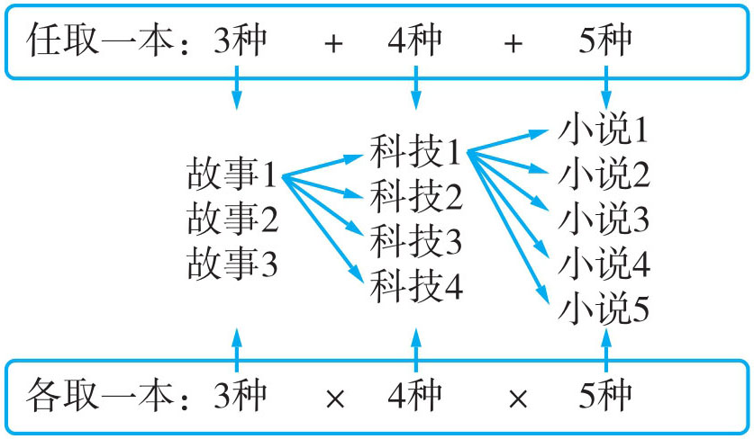
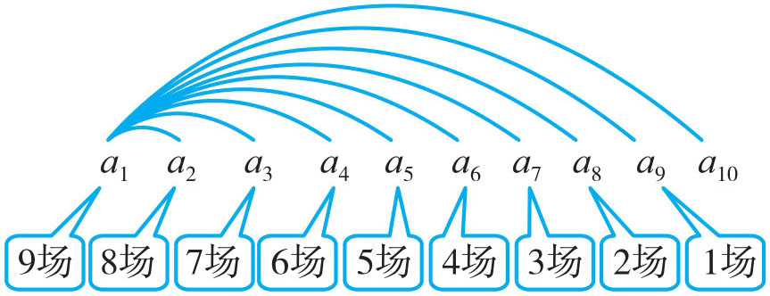
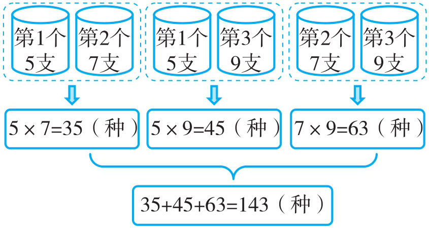
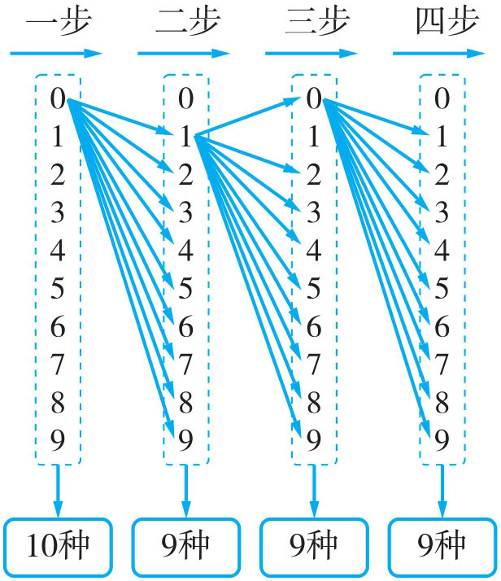
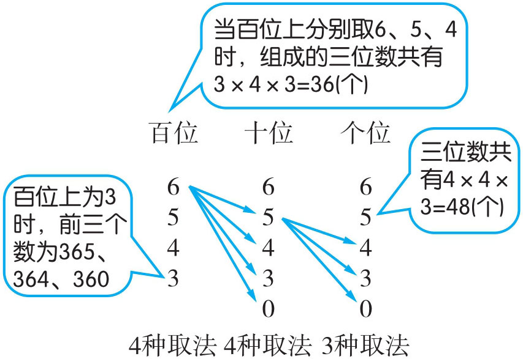
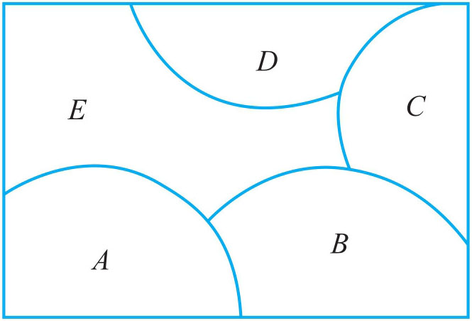

加法原理（又称分类计数原理） ：做一件事，完成它可以有n 类办法，在第一类办法中有m 1 种不同的方法，在第二类办法中有m 2 种不同的方法，……，在第n 类办法中有mn 种不同的方法，那么完成这件事共有N =m 1 +m 2 +m 3 +…+mn 种不同的方法。
乘法原理（又称分步计数原理） ：做一件事，完成它需要分成n 个步骤，做第一步有m 1 种不同的方法，做第二步有m 2 种不同的方法，……，做第n 步有mn 种不同的方法，那么完成这件事共有N =m 1 ×m 2 ×m 3 ×…×mn 种不同的方法。
相同点：都研究完成一件事情，共有多少种不同的方法。
不同点：加法原理任何一类办法中的任何一种方法都能完成这件事；乘法原理的方法要分步，每个步骤顺次相依，且每一步完成了，才能完成这件事。
例1 小明有3本故事书，小王有4本科技书，小张有5本小说书。
（1）付强老师准备从他们三人中任取一本，有多少种不同的取法？
（2）从他们三人中各取一本，有多少种不同的取法？
付强老师准备从他们三人中任取一本，有三类取法：第一类取法，3本故事书，有3种取法；第二类有4种取法；第三类有5种取法。这是分类统计，所以共有3+4+5=12（种）取法。如果从他们三人中各取一本，这就不是分类，而要分步进行，第一步，小明的书有3种取法；第二步，小王的书有4种取法；第三步，小张的书有5种取法。而每一步不能单独完成这件事，而要相互依存，每一步完成才算做完这件事，所以共有3×4×5=60（种）取法。

（1）3+4+5=12（种）
答：有12种不同的取法。
（2）3×4×5=60（种）
答：有60种不同的取法。
例2 有10支篮球队参加一次篮球比赛，每支球队都要和其他球队赛一场，共需要赛多少场？
将这10支球队分别用a 1 ，a 2 ，a 3 …a 10 来表示。因每队都要和其他球队赛一场，那么从a 1 开始，他要和a 2 ，a 3 …a 10 分别比赛，这样共赛了9场，而从a 2 开始时，不能再考虑和a 1 赛了（已经赛过），a 2 只能和a 3 ，a 4 …a 10 分别比赛，这样需要赛8场，依次类推，需赛7场，6场，5场，4场，3场，2场，1场。所以共需要赛：9+8+7+6+5+4+3+2+1=45（场）。

9+8+7+6+5+4+3+2+1=45（场）
答：共需要赛45场。
例3 有三个笔筒，第一个笔筒放着5支不同颜色的彩铅，第二个笔筒放着7支不同颜色的蜡笔，第三个笔筒放着9支不同颜色的水彩笔。岳仕林准备从任意两个笔筒中取出两支彩笔（每个笔筒一次取1支），有多少种不同的取法？
要完成这种取法，可以分类，取“第一、第二”个笔筒，“第一、第三”个笔筒，“第二、第三”个笔筒。取“第一、第二”这一类又要分步记数有5×7=35（种）取法；取“第一、第三”有5×9=45（种）取法；取“第二、第三”有7×9=63（种）取法。所以，共有35+45+63=143（种）取法。

5×7=35（种）
5×9=45（种）
7×9=63（种）
35+45+63=143（种）
答：共有143种取法。
例4 杨清翠家有一个密码箱，密码箱的号码锁有4个拨号盘，每个拨号盘上有0~9十个数字。她想设置一个密码，相邻的两个数字不能相同，这样的四位数号码有多少个？
根据题意，每个拨号盘上有10个数字，应该有10种拨法，但相邻的两个数字不能相同，再根据分步记数原理，左起的第1个数（任何一位开始拨数都可以）有10种拨法，第2个数字就只有9种拨法，同理第3、第4位上的数字都只有9种拨法。所以这样的四位数有10×9×9×9=7290（个）。

10×9×9×9=7290（个）
答：这样的四位数号码有7290个。
例5 在0、3、4、5、6这五个数字中，取出三个数字组成三位数，这样的三位数可以有很多个，如果把这些三位数从大到小排列起来。请你想一想，这串数中第39个数除以7的余数是多少？

三位数共有：4×4×3=48（个）百位上取6、5、4时，三位数有3×4×3=36（个）；后三位分别为365、364、360。
第39个数为360，360÷7=51
……3
答：从大到小排的第39个数除以7余数是3。
1．五年级有两个班，一班有8人能胜任英语节目主持，二班有10人能胜任。在一次全校英语节目展示中，准备从这两个班中选一人当主持，有多少种选法？若从两个班各选一人，又有多少种选法？
2．有4件不同的上衣，5条不同的裤子，4顶不同的帽子，从中取出一顶帽子、一件上衣、一条裤子配成一套装束，最多有多少种不同的装束？
3．机场有4个安检口，每个安检口每次只能过1人，有3名乘客过安检进候机厅，共有多少种进站方法？如果有5个安检口，9名旅客，共有多少种不同的过安检方法？
4．从1、2、3、4、5这五个数字中，取出三个数字组成三位数，这样的三位数可以有多少个？
5．银行卡的密码是由六个数字组成的，每一位上的数都可在0~9这十个数字中选取。简玮老师要给自己一张银行卡设置密码，有多少种可能？
6．用0，1，2，3，4，5，6七个数字，可以组成多少个能被9整除而又没有重复数字的五位数？
7．从1到400的自然数中，不含数字8的自然数有多少个？
8．在算式A
×B
×(C
+D
+E
+F
)=55中，不同的字母代表不同的数字，所有字母都在0~9中取值，那么六位数ABCDEF
的可能值有多少个？
9．用红、橙、黄、绿、蓝5种颜色给下图中的五个区域涂上颜色，使相邻两区域的颜色不同。问：共有多少种不同的着色方法？
